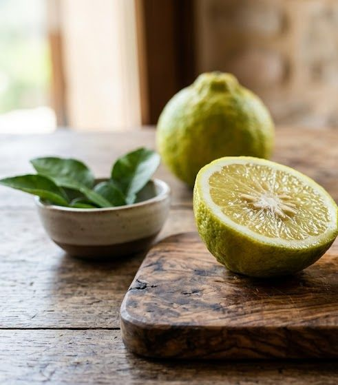

Nálada a radost
pro lehkost a vnitřní pohodu
Hledáte esenciální olej na náladu a radost? Když se cítíte smutní, přetížení nebo jste ztratili radost ze dne — ukáži vám, jak přirozeně podpořit dobrou náladu a znovu najít vnitřní lehkost.

pro lehkost a vnitřní pohodu
Hledáte esenciální olej na náladu a radost? Když se cítíte smutní, přetížení nebo jste ztratili radost ze dne — ukáži vám, jak přirozeně podpořit dobrou náladu a znovu najít vnitřní lehkost.
Jsem šťastná

Harmonizační směs pro obnovu vnitřní radosti a lehkosti.
Uvolňuje hněv, napětí a frustraci a pomáhá znovu vidět krásu běžných věcí.
💡 Prawtein I'm Happy — přírodní směs superpotravin a esenciálních olejů pro radost a pohodu zevnitř. Stačí 1–2 lžičky 3× denně.
💧 Naneste trochu nosného oleje (např. jojobový nebo kokosový) na chodidla, přidejte 1 kapku na každé chodidlo a rozetřete.
Nebo kápněte 1 kapku na dlaň, rozetřete mezi dlaněmi, přiložte na nos a ústa a pomalu se zhluboka nadechněte.
Více způsobů aplikace →
Radost není luxus — je to přirozený stav, ke kterému se lze vracet. Esence mohou být jemným impulzem, který pomáhá znovu najít lehkost a vnitřní pohodu, i v těžších dnech. Výsledky přicházejí s pravidelností — dopřejte si čas.

Mohlo by vás také zajímat:
Citrusy jako bergamot, mandarinka a limetka patří mezi nejrychleji povzbuzující, jasmín a směsi jako Joy pomáhají probudit hlubší, trvalejší pocit radosti.
Účinek vůně na náladu je prakticky okamžitý — citrusové oleje rozjasní pocit už během pár vdechů, hlubší proměna přichází s pravidelným používáním.
Ano, citrusy se navzájem skvěle doplňují — třeba mandarinka s pomerančem nebo bergamot s limetkou vytvoří ještě výraznější, radostnější vůni.
🌿 Všechny esence, které na tomto webu doporučuji, jsou od BEWIT. Jako registrovaný zákazník můžete nakupovat se slevou až 50 % na vybrané produkty.
Registrace u BEWIT zdarma →